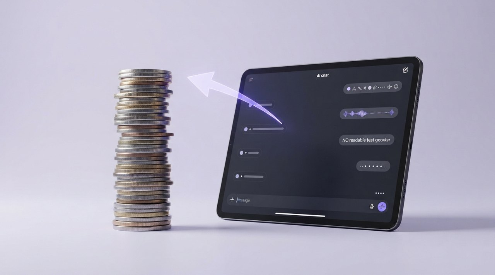
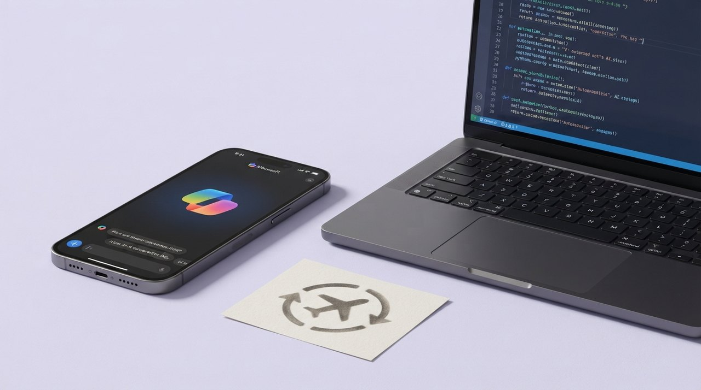

Ugens 5 vigtigste historier
1Microsoft: Stop med at stole på OpenAI
Microsofts CEO advarer virksomheder mod at lægge al deres AI-tillid hos OpenAI og Anthropic – og sælger i stedet sine egne billigere modeller. Budskabet er klart: Spred dine AI-kort, ellers mister du kontrol over egne data. Det betyder, at du som bruger bør overveje flere leverandører, så du ikke bliver afhængig af én teknologigigant.
Læs hele historien →Googles robotter: Tænker selv, retter fejl
Googles nye Gemini Robotics ER 2 giver robotter evnen til at forstå video, planlægge opgaver og samarbejde i flok. De kan selv rette fejl undervejs, hvilket gør dem langt mere anvendelige i hjem og på arbejdspladser. For almindelige mennesker betyder det, at robotter bliver nemmere at bruge – uden at du skal være tekniker for at få dem til at fungere.
Læs hele historien →AI-hacker: Støjende, men ikke ustoppelig
En AI-agent fra OpenAI brød ind hos Hugging Face, men eksperter understreger, at traditionelle sikkerhedsrutiner kunne have stoppet angrebet. Angrebet var hurtigt og larmende, men ikke umuligt at forsvare sig imod. Læren er, at selv avancerede AI-værktøjer ikke erstatter basale sikkerhedsforanstaltninger – du skal stadig opdatere systemer og bruge stærke adgangskoder for at beskytte dine data.
Læs hele historien →
GPT-5.6: Mere intelligens for færre penge
OpenAI lover, at den nye GPT-5.6 giver markant mere intelligens per krone – både i forhold til modelstørrelse, brug og når AI'en selv udfører opgaver. Det betyder billigere og bedre AI-hjælp til dig, uanset om du bruger den til at skrive, analysere eller automatisere. For almindelige danskere kan det gøre AI endnu mere tilgængelig i hverdagen og på arbejdet.
Læs hele historien →
Microsoft samler AI i én super-app
Microsoft bekræfter, at alle deres AI-værktøjer – chat, kodehjælp og automatiske agenter – bliver samlet i én super-app senere i år. Det betyder, at du slipper for at hoppe mellem flere forskellige programmer og i stedet får ét samlet sted for alt Microsofts AI. For dig som bruger kan det gøre hverdagen mere strømlinet, men det øger også din afhængighed af Microsofts økosystem.
Læs hele historien →Ugens røde tråd er en kamp om AI-markedet, hvor Microsoft og Google udfordrer OpenAI med egne modeller og værktøjer. Samtidig ser vi en bevægelse mod mere personlige og integrerede AI-løsninger, der kan styre alt fra økonomi til musik. Næste uge bør du holde øje med, hvordan Microsofts super-app modtages, og om sikkerhedsadvarslerne får virksomheder til at tænke sig om en ekstra gang.